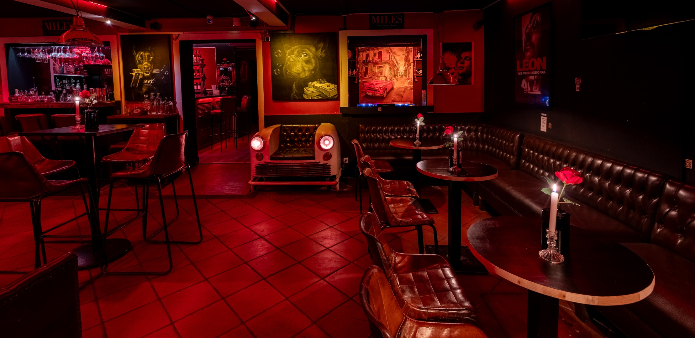

Ver fútbol en Barcelona, pero con estilo
Bar a 2 minutos del metro Universitat. 4 pantallas, billar y sala privada para los grandes partidos.
La zona Miles: 2 pantallas, billar y ambiente
La parte delantera del local es nuestro bar abierto a todos: dos televisores colocados para que se vea bien desde la barra, las mesas o la terraza. Mientras juega el partido, sigue activa la mesa de billar, las cervezas premium (Selecta, Brutus), los long drinks y los cócteles de autor a 12€. Aquí venimos a ver la Champions un martes, un partido de selección o cualquier gran cita. Ambiente cálido, gente adulta, sin gritos de peña.

In Confidence: privatiza tu propio palco
Para los partidos que importan de verdad — una final, un Mundial, un derbi — ofrecemos algo distinto a cualquier sports bar de Barcelona: la sala In Confidence, en la parte trasera del local, con sus dos pantallas propias, barra independiente, cócteles de autor y DJ opcional. Privatizable para grupos de 15 a 80 personas. Ideal para amigos, empresas, peñas internacionales o cumpleaños que coinciden con una gran noche de fútbol.
- Grupo de amigos que quiere vivir la final en su propio espacio
- Empresa que invita a clientes o equipo
- Peña internacional reunida durante el Mundial
- Cumpleaños o evento sobre un partido señalado

Champions League, Mundial 2026 y grandes citas
Partidos abiertos en la zona Miles — fase de grupos, eliminatorias, partidos de Liga importantes. Entras, te sientas, pides y disfrutas. Sin reserva obligatoria salvo finales.
Eventos privados en In Confidence — finales, partidos clave del Mundial 2026, derbis. Recomendamos reservar con antelación.
Cómo llegar y reservar
Dirección: Carrer de la Diputació 215, 08011 Barcelona — Eixample
Metro: Universitat (L1, L2), a 2 min. Cerca de Plaça Catalunya y Passeig de Gràcia.
Horario: martes a sábado, noche
Reservas: WhatsApp +34 932 472 654 — di qué partido, cuántos sois y si quieres zona bar o privatizar In Confidence.